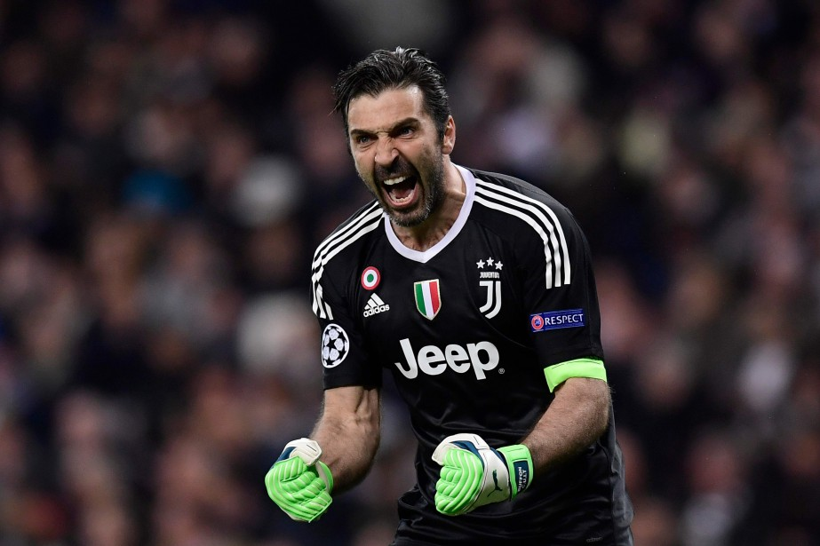
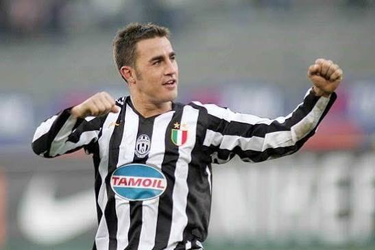
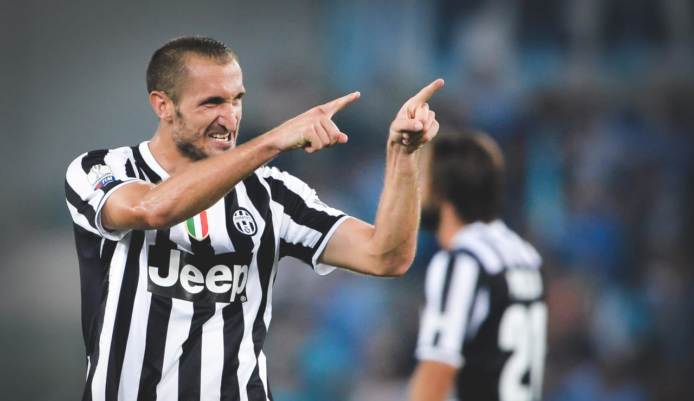
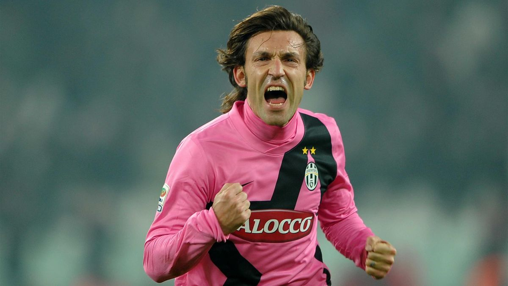
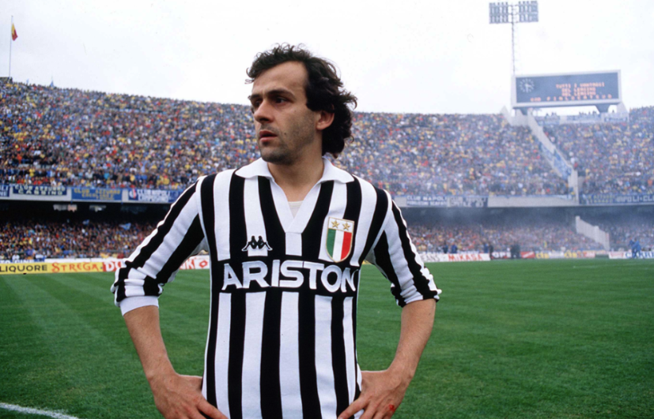
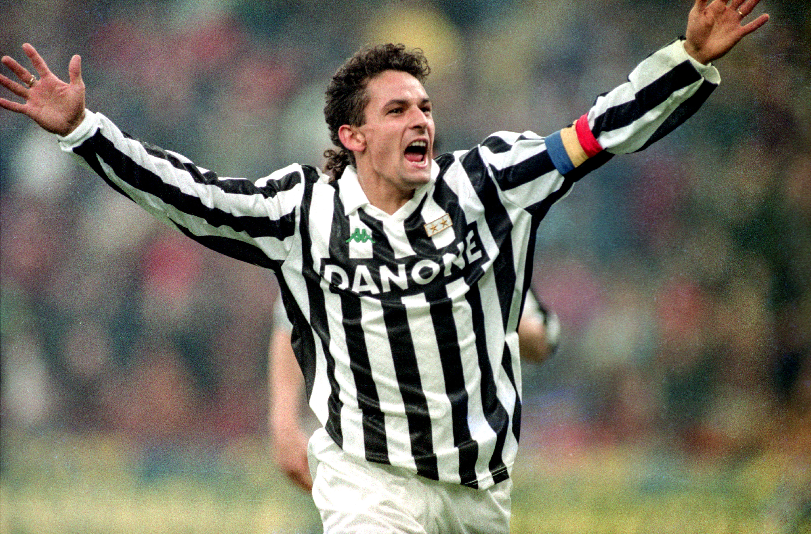
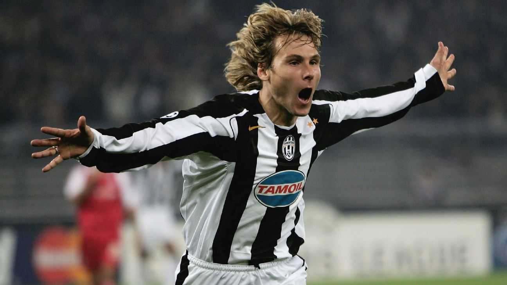
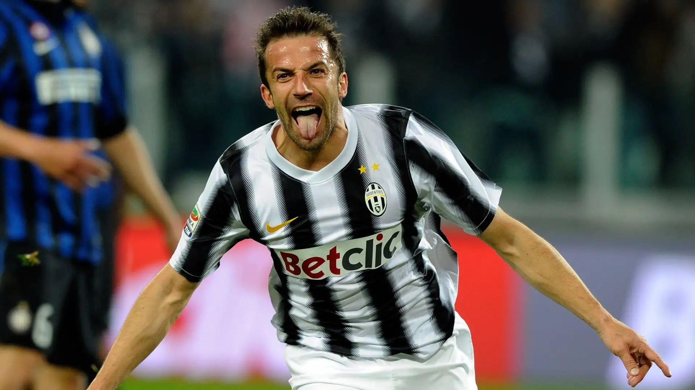
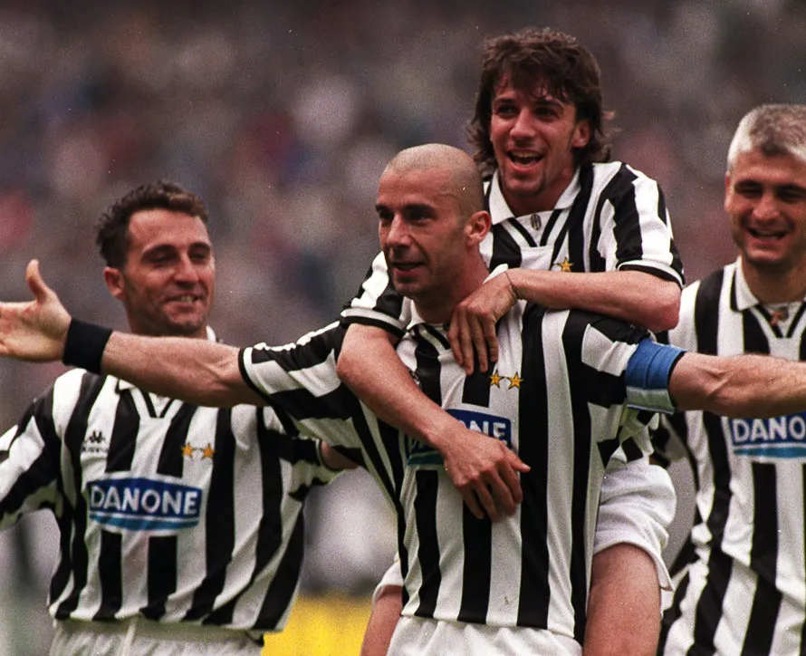

Gianluigi Buffon
Gianluigi Buffon è una leggenda della Juventus. Arrivato a Torino nel 2001, è diventato un simbolo di fedeltà e leadership. Con le sue grandi parate ha scritto pagine indimenticabili della storia bianconera.

Fabio Cannavaro
Fabio Cannavaro è stato un grande difensore della Juventus. Arrivato a Torino nel 2004, ha portato esperienza e solidità alla difesa bianconera, diventando un giocatore importante nella storia del club.

Giorgio Chiellini
Giorgio Chiellini è una leggenda della Juventus. Arrivato a Torino nel 2005, è diventato un simbolo di grinta, leadership e attaccamento alla maglia bianconera, guidando la squadra per molti anni.

Andrea Pirlo
Andrea Pirlo è una leggenda del calcio italiano e della Juventus. Arrivato a Torino nel 2011, ha conquistato i tifosi con la sua eleganza, la sua visione di gioco e i suoi passaggi straordinari, diventando un punto di riferimento del centrocampo bianconero.

Zinedine Zidane
Zinedine Zidane è una leggenda della Juventus. Arrivato a Torino nel 1996, ha conquistato i tifosi con la sua tecnica, la sua classe e la sua straordinaria visione di gioco, diventando uno dei centrocampisti più talentuosi della storia bianconera.

Michel Platini
Michel Platini è una delle più grandi leggende della Juventus. Arrivato a Torino nel 1982, ha incantato i tifosi con il suo talento, la sua tecnica e i suoi gol decisivi, diventando un simbolo del calcio bianconero.

Roberto Baggio
Roberto Baggio è una leggenda del calcio italiano e della Juventus. Arrivato a Torino nel 1990, ha conquistato i tifosi con il suo talento, la sua creatività e i suoi gol spettacolari, diventando uno dei giocatori più amati della storia bianconera.

Pavel Nedvěd
Pavel Nedvěd è una leggenda della Juventus. Arrivato a Torino nel 2001, ha conquistato i tifosi con la sua grinta, la sua corsa e la sua determinazione. Con il suo talento ha lasciato un segno indelebile nella storia bianconera.

Alessandro Del Piero
Alessandro Del Piero è la più grande icona della Juventus. Arrivato a Torino nel 1993, ha dedicato quasi tutta la sua carriera al club, diventando il simbolo della maglia bianconera grazie ai suoi gol, alla sua classe e alla sua fedeltà.

Cristiano Ronaldo
Cristiano Ronaldo è una delle stelle più importanti della storia recente della Juventus. Arrivato a Torino nel 2018, ha conquistato i tifosi con i suoi gol, la sua professionalità e le sue prestazioni straordinarie, lasciando un segno importante nel club bianconero.
Gianluca Vialli
Gianluca Vialli è una leggenda della Juventus. Arrivato a Torino nel 1992, è diventato un simbolo di carattere, leadership e spirito vincente. Con i suoi gol ha contribuito a grandi successi del club, entrando per sempre nella storia bianconera.
